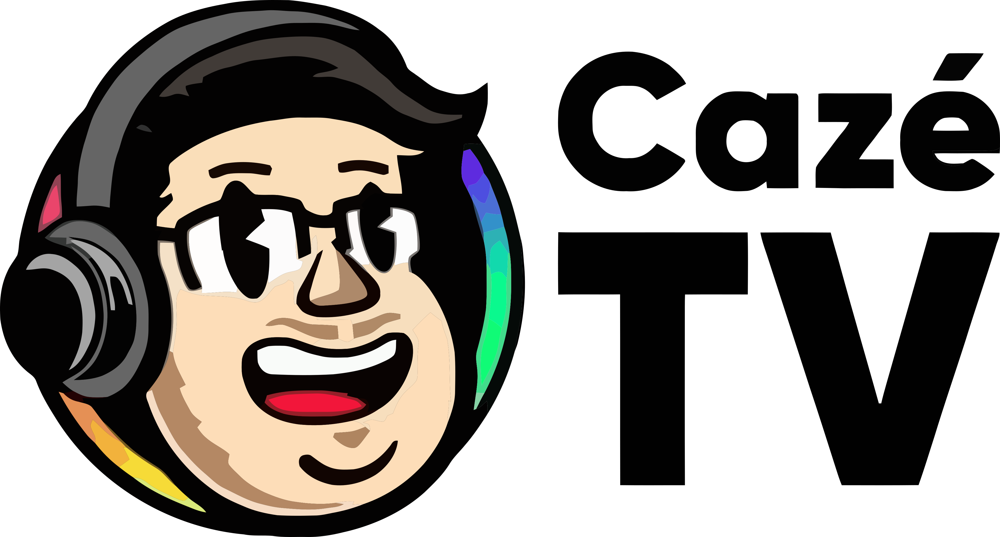

No Brasil x Haiti, a CazéTV bateu o recorde mundial de audiência simultânea do YouTube. Em telas. Ao vivo. De graça.
Ontem, no Brasil x Haiti, a CazéTV cravou 16,1 milhões de telas assistindo ao mesmo tempo. Recorde mundial de audiência simultânea do YouTube.
De quebra, passou o antigo recorde mundial do YouTube: o pouso lunar de 2023 (8 mi). A CazéTV praticamente dobrou a maior marca da plataforma.
Sem antena, sem cabo, sem assinatura. 104 jogos de graça no YouTube. O torcedor escolheu o digital.

O streaming virou o novo
estádio do Brasil.
A CazéTV não comprou audiência. Ela construiu relação, todo dia, por anos.
Quando a Copa chegou, colheu o que plantou: o maior público do planeta.